Chapter 3 Spatial Data in R
3.1 Vectors
The primary packages that deal with these features are sf and sp
sf means “simple feature” while sp is short for “spatial.” There are pros and cons to both (for example, a lot of other packages depend on sp, sf works well in tidyverse, etc.). However, in my opinion, there is no reason that you can’t use both in the same code, if needed. This website goes into more detail about these packages and the specifics about objects from these packages.
3.1.1 Loading vector data from a spreadsheet
You will often have a spreadsheet of data that have two columns of latitude and longitude (and potentially other columns for the attributes of these features).
sites <- read.csv("Data/Examples/Sites.csv")
head(sites)## Site Latitude Longitude
## 1 1 37.84203 -110.8090
## 2 2 39.04723 -111.3390
## 3 3 38.04543 -109.2163
## 4 4 39.71574 -113.1987
## 5 5 41.50760 -111.5509
## 6 6 38.75022 -111.5154class(sites)## [1] "data.frame"How can we convert this data table into a spatial object?
With sf
We’ll use the function st_as_sf() to convert an object of another class to an sf object. As with any function, you can always type ?st_as_sf in the console to remind yourself what the function does and what arguments you need to add. In this case, the non-optional arguments are x (the object we want to convert, in this case our sites data frame) and coords (the columns in the data frame that have the coordinate data).
The argument crs is optional but we should add it so that our spatial object has a coordinate reference system. Because our coordinates are lat/long, we should tell st_as_sf that our crs is WGS84 lat/long (Remember that the EPSG code for WGS84 lat/long is 4326). Note: Even if you’re working in a different geographic or projection coordinate system, it is ALWAYS good practice to load in lat/long coordinates as WGS84 lat/long and then later projecting the object, instead of right away giving it a projected coordinate system. This is because GPS coordinates work with a global datum (being a global positioning system), and you might have inaccurate positions if you load it in with another datum or projection.
sites_sf <- st_as_sf(sites,
coords = c("Longitude", "Latitude"),
crs = 4326)
head(sites_sf)## Simple feature collection with 6 features and 1 field
## Geometry type: POINT
## Dimension: XY
## Bounding box: xmin: -113.1987 ymin: 37.84203 xmax: -109.2163 ymax: 41.5076
## Geodetic CRS: WGS 84
## Site geometry
## 1 1 POINT (-110.809 37.84203)
## 2 2 POINT (-111.339 39.04723)
## 3 3 POINT (-109.2163 38.04543)
## 4 4 POINT (-113.1987 39.71574)
## 5 5 POINT (-111.5509 41.5076)
## 6 6 POINT (-111.5154 38.75022)Now when we look at the head of sites_sf it also prints out some information about this spatial object: it is a simple feature, it is a POINT object, the min/max coordinates (the bounding box), and the CRS. Note that the “Longitude” and “Latitude” columns turned into a “geometry” column. We can also check this information with separate functions: st_bbox and st_crs
st_bbox(sites_sf)## xmin ymin xmax ymax
## -113.50131 37.55458 -109.21630 41.50760st_crs(sites_sf)## Coordinate Reference System:
## User input: EPSG:4326
## wkt:
## GEOGCRS["WGS 84",
## DATUM["World Geodetic System 1984",
## ELLIPSOID["WGS 84",6378137,298.257223563,
## LENGTHUNIT["metre",1]]],
## PRIMEM["Greenwich",0,
## ANGLEUNIT["degree",0.0174532925199433]],
## CS[ellipsoidal,2],
## AXIS["geodetic latitude (Lat)",north,
## ORDER[1],
## ANGLEUNIT["degree",0.0174532925199433]],
## AXIS["geodetic longitude (Lon)",east,
## ORDER[2],
## ANGLEUNIT["degree",0.0174532925199433]],
## USAGE[
## SCOPE["Horizontal component of 3D system."],
## AREA["World."],
## BBOX[-90,-180,90,180]],
## ID["EPSG",4326]]st_crs printed out a lot of information, but the important things to note are that we (the user) inputted EPSG: 4326, its datum is “World Geodetic System 1984” (or WGS 84), its axes are latitude and longitude, and its units are “degree” (as opposed to a linear unit like m that we might see in a projected crs). It’s always good practice to double check the CRS of your object before you perform any analysis.
Note that now when we look at the class of sites_sf it has two classes: sf and data.frame.
class(sites_sf)## [1] "sf" "data.frame"This is one of the great things about sf: because sf objects remain as class data.frame, it makes it easy to work with an sf object like you would with any data frame.
Now that it’s a spatial object, let’s plot it and see what it looks like!
plot(sites_sf, pch = 16)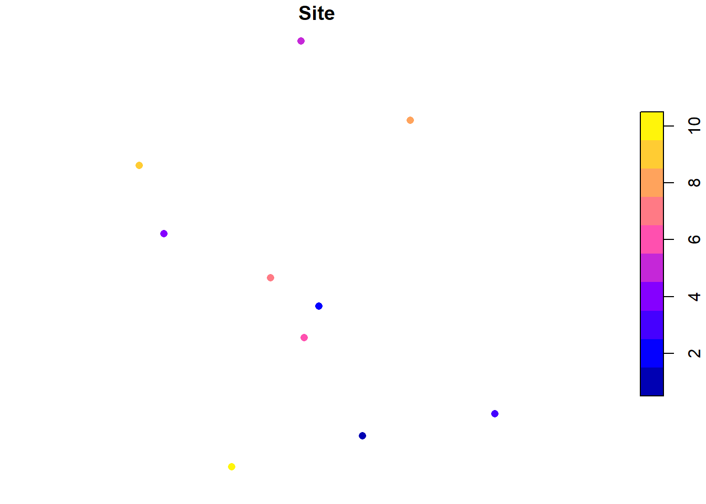
This object only has one attribute (“Site”). If it had more than one, plotting in base R (i.e. using the plot function) plots all attributes (it will actually only plot 10 and will give you a warning if there are more than 10 attributes).
To just plot the feature’s shape, we can use st_geometry to extract the geometry of the vector
plot(st_geometry(sites_sf), pch = 16)
We can also use ggplot2 to plot sf objects. ggplot2 has a function called geom_sf, which makes it easy to visualize sf objects with ggplot2
ggplot(sites_sf) +
geom_sf() # note that we don't need to tell ggplot what it should consider x and y to be; that's already built in with the "geometry" column!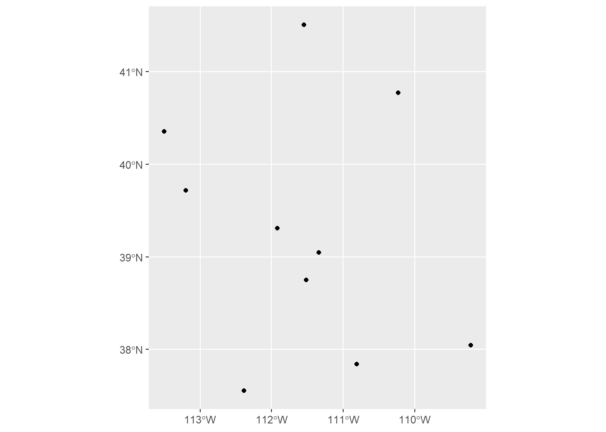
Remember, though, that this workshop will not cover how to make nice maps in R (that will be in the next workshop). I just bring this up because you would want to be sure the data you’re working with looks like what you might expect it to, so you would want to make a quick plot before moving on to analysis.
With sp
Let’s do the same thing but now with the sp package. We’ll use the function coordinates. This function will pull the coordinates from an object of class Spatial, but it will also assign coordinates to an object of class data.frame and automatically convert it to a Spatial object by following this format:
coordinates(my_dataframe) <- c("x", "y") # x & y are the NAMES of the columns
# OR
coordinates(my_dataframe) <- c(1, 2) # 1 & 2 are the INDICES of the columnsI’m first going to make a duplicate object of “sites” called “sites_sp” because coordinates will overwrite the original data.frame object into a Spatial object (which is not necessarily a bad thing, but sometimes you want to keep all your objects separate in case you need to use the original data frame for some reason)
sites_sp <- sites
coordinates(sites_sp) <- c("Longitude", "Latitude")
sites_sp## class : SpatialPointsDataFrame
## features : 10
## extent : -113.5013, -109.2163, 37.55458, 41.5076 (xmin, xmax, ymin, ymax)
## crs : NA
## variables : 1
## names : Site
## min values : 1
## max values : 10Just like with sf, printing the object in sp will also show some information about that object, namely the class, extent, and CRS. And just like with sf we can use functions to look at this information for a Spatial object: class, bbox, and proj4string
class(sites_sp)## [1] "SpatialPointsDataFrame"
## attr(,"package")
## [1] "sp"bbox(sites_sp)## min max
## Longitude -113.50131 -109.2163
## Latitude 37.55458 41.5076proj4string(sites_sp)## [1] NAThe CRS right now is NA. With sf we were able to assign a CRS while also converting the data frame to a simple feature, but with sp we need to do that in a separate step. We’ll use proj4string again as this function not only checks the CRS of a spatial object but can also be used to assign a CRS. In sf, we could give the function the EPSG code itself, but in sp we need to give it a character string wrapped in the function CRS. There are a few ways to write this character string, but the easiest one to remember, in my opinion, follows this format: "+init=epsg:####" (where #### would be the EPSG code)
proj4string(sites_sp) <- CRS("+init=epsg:4326")
proj4string(sites_sp)## [1] "+proj=longlat +datum=WGS84 +no_defs"Great! Now let’s plot it to make sure it looks like what we would expect it to
plot(sites_sp,
pch = 16) # it defaults, for some reason, to a cross shape, so this changes it to a filled in circle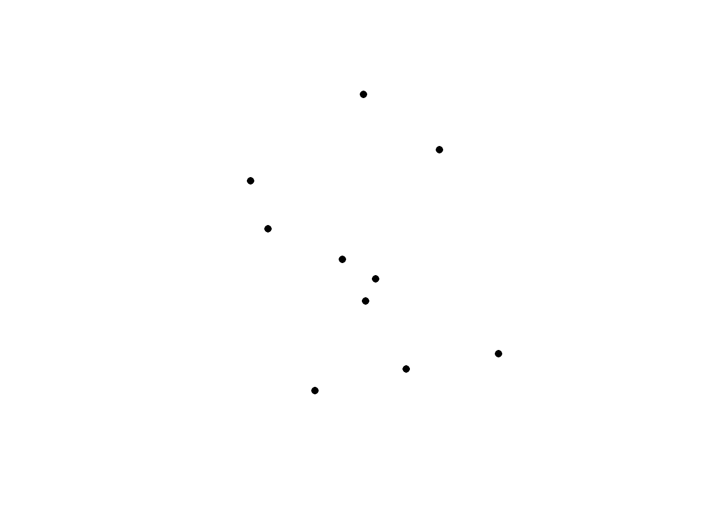
It is not as straightforward to plot an object of class Spatial with ggplot2 as it was with sf, so I would recommend either converting the object to sf (which we will cover later in this chapter) or just plotting from the data frame
ggplot(sites) +
geom_point(aes(x = Longitude, y = Latitude))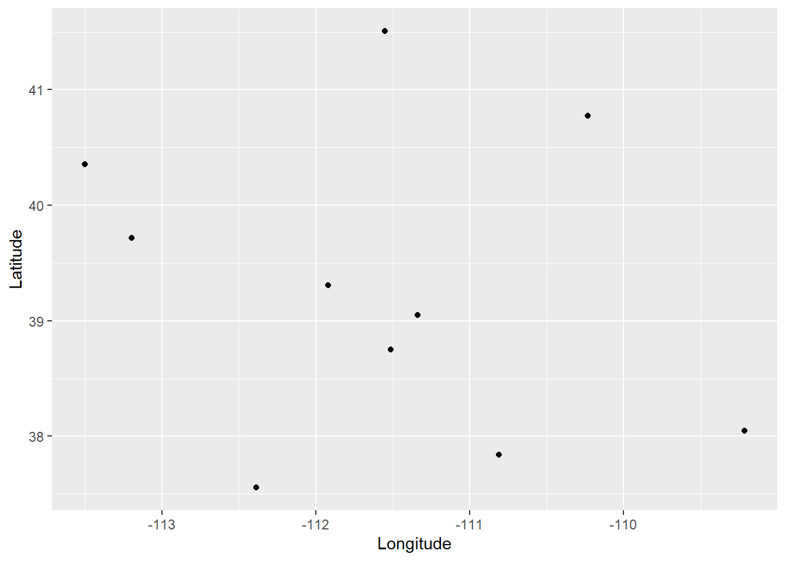
3.1.2 Loading vector data
A lot of the time, you will have spatial data already saved as a shapefile. How do we load that into R?
with sf
We’ll use the function st_read which takes two arguments: dsn (data source name), which is essentially the folder where the shapefile is located, and layer, which is the name of file (without any extensions). layer is technically optional because dsn will choose the first file in that folder, so if the shapefile is the only file in that folder, then dsn will automatically choose the file. But I like to specify the layer name to avoid any mishaps.
# Shapefile: freeways in Utah
fwy_sf <- st_read(dsn = "Data/Examples/utah_freeway", layer = "utah_freeway")## Reading layer `utah_freeway' from data source
## `C:\Users\a02351338\Box\Ecology Center\R_Spatial_bookdown\Data\Examples\utah_freeway'
## using driver `ESRI Shapefile'
## Simple feature collection with 1849 features and 7 fields
## Geometry type: LINESTRING
## Dimension: XY
## Bounding box: xmin: -114.0437 ymin: 37.00002 xmax: -109.0513 ymax: 42.00117
## Geodetic CRS: WGS 84You’ll note that as we read in a shapefile with st_read, it automatically prints out the information about this feature (if you don’t want R to print this, put quiet = FALSE in the function).
Again, we can check this information separately (in case we forget or we need to check later in the analysis). We can also check the first few rows of the data frame to see what kind of attributes there are, and we can plot the feature to make sure it looks like what we expect it to be.
st_bbox(fwy_sf)## xmin ymin xmax ymax
## -114.04367 37.00002 -109.05128 42.00117st_crs(fwy_sf)## Coordinate Reference System:
## User input: WGS 84
## wkt:
## GEOGCRS["WGS 84",
## DATUM["World Geodetic System 1984",
## ELLIPSOID["WGS 84",6378137,298.257223563,
## LENGTHUNIT["metre",1]]],
## PRIMEM["Greenwich",0,
## ANGLEUNIT["degree",0.0174532925199433]],
## CS[ellipsoidal,2],
## AXIS["latitude",north,
## ORDER[1],
## ANGLEUNIT["degree",0.0174532925199433]],
## AXIS["longitude",east,
## ORDER[2],
## ANGLEUNIT["degree",0.0174532925199433]],
## ID["EPSG",4326]]head(fwy_sf)## Simple feature collection with 6 features and 7 fields
## Geometry type: LINESTRING
## Dimension: XY
## Bounding box: xmin: -112.0148 ymin: 40.12468 xmax: -111.6544 ymax: 41.24017
## Geodetic CRS: WGS 84
## OBJECTID FULLNAME NAME POSTTYPE SPEED_LMT UNIQUE_ID
## 1 898 I-80 EB FWY I-80 EB FWY 65 12TVL21421309_I-80 EB_FWY
## 2 1372 I-15 NB FWY I-15 NB FWY 65 12TVK44214181_I-15 NB_FWY
## 3 1374 I-84 WB FWY I-84 WB FWY 70 12TVL528848324_I-84 WB_FWY
## 4 1727 I-15 NB FWY I-15 NB FWY 70 12TVL14996575_I-15 NB_FWY
## 5 1955 I-84 WB FWY I-84 WB FWY 65 12TVL43954376_I-84 WB_FWY
## 6 2062 I-15 NB FWY I-15 NB FWY 65 12TVL22992231_I-15 NB_FWY
## Shape__Len geometry
## 1 331.34350 LINESTRING (-111.9295 40.76...
## 2 87.78441 LINESTRING (-111.6551 40.12...
## 3 1030.55015 LINESTRING (-111.9096 41.13...
## 4 442.62095 LINESTRING (-112.0148 41.24...
## 5 423.15540 LINESTRING (-111.6685 41.04...
## 6 489.79063 LINESTRING (-111.9144 40.84...ggplot(fwy_sf) +
geom_sf()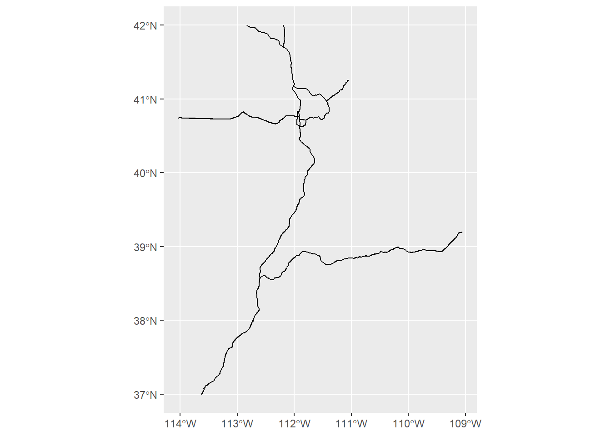
with sp
To read in spatial data as an object in the Spatial family, we need to use the rgdal package. (When you load in rgdal, it will also automatically load in sp). We’ll use the rgdal function readOGR. This function is similar to st_read in that its arguments are dsn and layer which work exactly the same way as they do in st_read
fwy_sp <- readOGR(dsn = "Data/Examples/utah_freeway", layer = "utah_freeway")## OGR data source with driver: ESRI Shapefile
## Source: "C:\Users\a02351338\Box\Ecology Center\R_Spatial_bookdown\Data\Examples\utah_freeway", layer: "utah_freeway"
## with 1849 features
## It has 7 fieldsread_OGR, also like st_read, will print out some information after reading in the shapefile. If you want to turn this off, you can add verbose = FALSE in the function’s arguments.
Let’s check the feature’s information (class, extent, and CRS) and plot it
class(fwy_sp)## [1] "SpatialLinesDataFrame"
## attr(,"package")
## [1] "sp"bbox(fwy_sp)## min max
## x -114.04367 -109.05128
## y 37.00002 42.00117proj4string(fwy_sp)## [1] "+proj=longlat +datum=WGS84 +no_defs"plot(fwy_sp)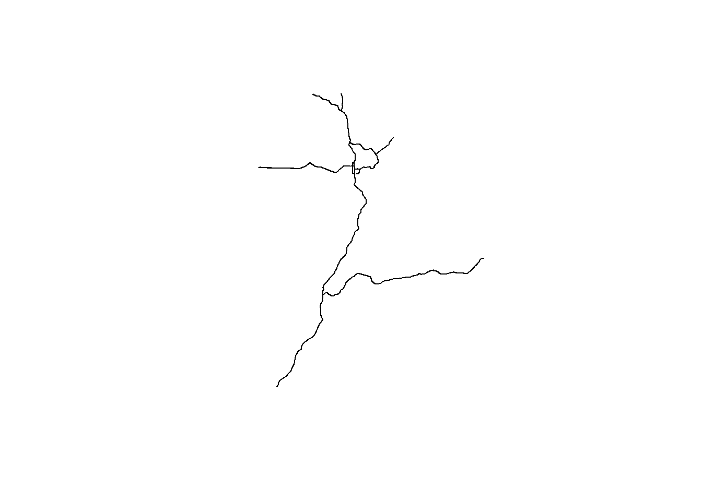
3.1.3 Projecting vector data
So far all of our vector data has only been in WGS 84 lat/long CRS. More than likely you will want to work in a projected coordinate system. So how do we re-project (or transform) features in R?
- In
sfwe’ll use the functionst_transform() - In
spwe’ll use the functionspTransform()
Both of these functions need the object you want to re-project and the target CRS.
What CRS should we work in? Like I said earlier, UTM is a popular projection because it’s localized and allows you to work with with linear metrics like length, area, and distance. Since both of these features (our site data and Utah freeways) are located in Utah, we would use UTM 12N. We can stay in the WGS 84 datum, but for the purposes of demonstration, let’s change to NAD83. (Remember from the previous chapter that there is not much difference between these datums, so it’s up to you if you want to use a more localized datum (NAD83) or a more recent datum (WGS84)). The EPSG code for NAD83 UTM 12N is 26912. (If you want to work in WGS84 UTM 12N, the EPSG code is 32612)
# sf
fwy_sf_proj <- st_transform(fwy_sf, crs = 26912)
st_crs(fwy_sf_proj)## Coordinate Reference System:
## User input: EPSG:26912
## wkt:
## PROJCRS["NAD83 / UTM zone 12N",
## BASEGEOGCRS["NAD83",
## DATUM["North American Datum 1983",
## ELLIPSOID["GRS 1980",6378137,298.257222101,
## LENGTHUNIT["metre",1]]],
## PRIMEM["Greenwich",0,
## ANGLEUNIT["degree",0.0174532925199433]],
## ID["EPSG",4269]],
## CONVERSION["UTM zone 12N",
## METHOD["Transverse Mercator",
## ID["EPSG",9807]],
## PARAMETER["Latitude of natural origin",0,
## ANGLEUNIT["degree",0.0174532925199433],
## ID["EPSG",8801]],
## PARAMETER["Longitude of natural origin",-111,
## ANGLEUNIT["degree",0.0174532925199433],
## ID["EPSG",8802]],
## PARAMETER["Scale factor at natural origin",0.9996,
## SCALEUNIT["unity",1],
## ID["EPSG",8805]],
## PARAMETER["False easting",500000,
## LENGTHUNIT["metre",1],
## ID["EPSG",8806]],
## PARAMETER["False northing",0,
## LENGTHUNIT["metre",1],
## ID["EPSG",8807]]],
## CS[Cartesian,2],
## AXIS["(E)",east,
## ORDER[1],
## LENGTHUNIT["metre",1]],
## AXIS["(N)",north,
## ORDER[2],
## LENGTHUNIT["metre",1]],
## USAGE[
## SCOPE["Engineering survey, topographic mapping."],
## AREA["North America - between 114°W and 108°W - onshore and offshore. Canada - Alberta; Northwest Territories; Nunavut; Saskatchewan. United States (USA) - Arizona; Colorado; Idaho; Montana; New Mexico; Utah; Wyoming."],
## BBOX[31.33,-114,84,-108]],
## ID["EPSG",26912]]# sp
sites_sp_proj <- spTransform(sites_sp, "+init=epsg:26912")
proj4string(sites_sp_proj)## [1] "+proj=utm +zone=12 +datum=NAD83 +units=m +no_defs"Note that the coordinates of the WGS84 object compared the coordinates of the projected object are different.
st_geometry(fwy_sf)## Geometry set for 1849 features
## Geometry type: LINESTRING
## Dimension: XY
## Bounding box: xmin: -114.0437 ymin: 37.00002 xmax: -109.0513 ymax: 42.00117
## Geodetic CRS: WGS 84
## First 5 geometries:## LINESTRING (-111.9295 40.76479, -111.9324 40.76...## LINESTRING (-111.6551 40.12468, -111.6547 40.12...## LINESTRING (-111.9096 41.13769, -111.9089 41.13...## LINESTRING (-112.0148 41.24017, -112.0145 41.23...## LINESTRING (-111.6685 41.04395, -111.6653 41.0424)st_geometry(fwy_sf_proj)## Geometry set for 1849 features
## Geometry type: LINESTRING
## Dimension: XY
## Bounding box: xmin: 242993.7 ymin: 4098090 xmax: 668288.9 ymax: 4651339
## Projected CRS: NAD83 / UTM zone 12N
## First 5 geometries:## LINESTRING (421549.3 4513062, 421304.4 4513119)## LINESTRING (444185.1 4441802, 444220.4 4441825,...## LINESTRING (423663.9 4554441, 423720.3 4554432,...## LINESTRING (414965.3 4565915, 414986 4565753, 4...## LINESTRING (443817.3 4543851, 444084.9 4543677)The coordinates for the object in WGS84 are in lat/long and the units are decimal degrees. The coordiantes for the projected object are in UTM and the untis are meters.
REMINDER: You should always double-check the CRS of every feature and object you’re working with because you want to make sure everything is projected to the same CRS! If they’re not, it could result in inaccurate analysis and plotting. Depending on what functions you’re using, R may give you a warning or error that the CRS of one feature and another don’t match, but it’s best not to rely on this and just double-check yourself.
3.1.4 Saving vector data
Once you’ve created or modified a spatial object, most likely you want to save it so you can use it later or share with collaborators. There are many files types that can hold spatial data, but the most commonly used are ESRI Shapefile (which can be used in ArcGIS software), KML (which can be used with Google Earth Engine), GeoJSON, and PostgreSQL. If you’re curious what other file types are out there, you can use functions st_drivers() or ogrDrivers() for sf and sp respectively. In this workshop, I will focus just on ESRI Shapefiles.
If you’ve worked with shapefiles before, you’ve likely noticed that a shapefile is actually a collection of files with the extensions .dbf, .prj, .shp, and .shx. It’s often easier to organize and share shapefiles if they’re in their own folder. If you don’t already have a folder ready for any shapefiles that you’re ready to save, you can, of course, manually make one in the File Explorer. But you can also create folders in R! I, personally, often like to do this because it helps streamline my process. To do so we’ll use the functions dir.exists() to check if the directory (or folder) or not, and if it doesn’t we’ll use dir.create() to create a directory.
out_dir <- "Data/Examples/Sites_shp" # name what you want the folder to be and save it in an object
if(!dir.exists(out_dir)){ # this if statement is basically saying "if out_dir does NOT exist..." (the NOT is from the exclamation mark)
dir.create(out_dir) # and if out_dir does NOT exist, then dir.create will create it
}Now that we’ve created a new directory for this shapefile to go to, let’s save our shapefile! For sf objects we’ll use the function st_write and for Spatial* objects we’ll use the function writeOGR. The arguments for these two functions are basically the same: they take the object you’re saving, the dsn (or the folder) you want to save it to, the layer (or the name you want to save the file as, do NOT add an extension), and the driver (meaning if you’re saving it as an ESRI Shapefile, KML, etc.)
# sf
st_write(sites_sf, dsn = out_dir, layer = "Sites_sf", driver = "ESRI Shapefile")
# sp
writeOGR(sites_sp, dsn = out_dir, layer = "Sites_sp", driver = "ESRI Shapefile")In reality I would only be working with either an sf object or a Spatial* object and I wouldn’t save both (because once they’re saved as a shapefile, they are exactly the same file).
3.1.5 Converting between sf and sp
As I mentioned before, there is no reason to not use both sf and Spatial* objects in one piece of code, but it doesn’t make sense to load or create a single object as both an sf and Spatial* class. In some cases it makes more sense to work with sf objects and then convert them to Spatial* if needed (or vice versa). Lucky for us, it’s pretty easy to convert an sf object to Spatial* and then back to sf. For sf -> Spatial* we’ll use the function as() or as_Spatial(). For Spatial* -> sf we’ll use a function we’ve allready used: st_as_sf()
# convert sf object to Spatial
class(fwy_sf)## [1] "sf" "data.frame"fwy_sf_to_sp <- as_Spatial(fwy_sf)
class(fwy_sf_to_sp)## [1] "SpatialLinesDataFrame"
## attr(,"package")
## [1] "sp"# you can also use the function as() and add an argument "Spatial"
fwy_sf_to_sp_2 <- as(fwy_sf, "Spatial")
identical(fwy_sf_to_sp, fwy_sf_to_sp_2) # they are exactly the same## [1] TRUE# convert Spatial object to sf
class(fwy_sp)## [1] "SpatialLinesDataFrame"
## attr(,"package")
## [1] "sp"fwy_sp_to_sf <- st_as_sf(fwy_sp)
class(fwy_sp_to_sf)## [1] "sf" "data.frame"A note about sf and tidyverse
As I mentioned earlier, sf works really well with tidyverse. If you are familiar with tidyverse then you know that one pro is the pipe (%>%) which lets you perform multiple functions at once without getting cluttered and hard to read. Functions for sf can easily be incorporated into the tidyverse piping method as well. For an example, we can load a csv file, covert it to an sf object, project it, and save it all at once using the pipes.
read.csv("Data/Examples/Sites.csv") %>%
st_as_sf(coords = c("Longitude", "Latitude"), crs = 4326) %>%
st_transform(crs = 26912) %>%
st_write(dsn = "data", layer = "Sites_shp", driver = "ESRI Shapefile")Of course, this requires that you already know what the column names for the coordinates are, and this might not be the best example for a series of functions to use with the pipe. But this type of process is a useful tool to know, especially if you are already familiar with and frequently use tidyverse.
3.2 Rasters
The primary package that deals with rasters is raster. Note that raster depends on the sp package, as it loads sp automatically when you load raster. (terra also works with rasters but is funcitonally very similar to raster).
3.2.1 Load a raster
When you want to load a raster that is saved in a directory, you’ll use the (aptly named) function raster. When loading a raster that is already saved, the only argument you need is the filename (including the directory and extension)
elev <- raster("Data/Examples/elevation.tif")
elev## class : RasterLayer
## dimensions : 334, 390, 130260 (nrow, ncol, ncell)
## resolution : 0.000278, 0.000278 (x, y)
## extent : -114.0275, -113.9191, 36.40381, 36.49667 (xmin, xmax, ymin, ymax)
## crs : +proj=longlat +datum=WGS84 +no_defs
## source : elevation.tif
## names : elevation
## values : 645.7881, 1137.67 (min, max)When we examine the raster (by simply calling the object like we did above), we get a lot of useful information.
class: the class of the raster (this could beRasterLayer,RasterStack, orRasterBrick)dimensions: the number of rows, columns, and cellsresolution: the size of the cellsextent: the min/max x and ycrs: the coordinate reference systemvalues: the min/max values this raster contains
I recommend always examining a raster after you load it in to make sure the information looks like what you would expect it to be.
You can also check all of this information with separate functions:
class(elev)## [1] "RasterLayer"
## attr(,"package")
## [1] "raster"nrow(elev)## [1] 334ncol(elev)## [1] 390ncell(elev)## [1] 130260res(elev) # the cell resolution of the raster## [1] 0.000278 0.000278extent(elev)## class : Extent
## xmin : -114.0275
## xmax : -113.9191
## ymin : 36.40381
## ymax : 36.49667proj4string(elev) # alternatively, we can use crs(r) which will print out a lot more information. proj4string() is sufficient## [1] "+proj=longlat +datum=WGS84 +no_defs"summary(values(elev)) # put this in summary() so we can get an idea of the spread of values (rather than a list of all of the values themselves)## Min. 1st Qu. Median Mean 3rd Qu. Max.
## 645.8 798.5 869.5 864.4 932.0 1137.7We can also plot the raster to check that it looks like what we would expect it to be
plot(elev)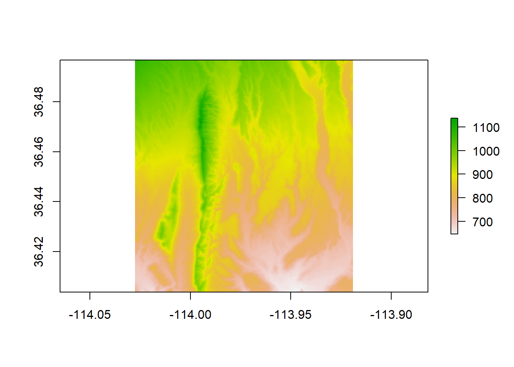
We can also plot a raster with ggplot2, but we need to do an extra step of converting it to a data frame first. We’ll use the base R function as.data.frame and we need to be sure to put xy = TRUE in the arguments. After we do that, we can use the function geom_raster() within ggplot. Within the aes() function in geom_raster(), we need to put the columns that correspond to the x and y locations and what the fill value should represent (in this case, elevation).
elev_df <- as.data.frame(elev, xy = TRUE)
head(elev_df) # the data frame of a raster contains columns for the x and y locations and the corresponding cell value## x y elevation
## 1 -114.0274 36.49653 1082.456
## 2 -114.0271 36.49653 1081.739
## 3 -114.0268 36.49653 1080.975
## 4 -114.0265 36.49653 1079.712
## 5 -114.0262 36.49653 1077.750
## 6 -114.0260 36.49653 1075.466ggplot(elev_df) +
geom_raster(aes(x = x, y = y, fill = elevation))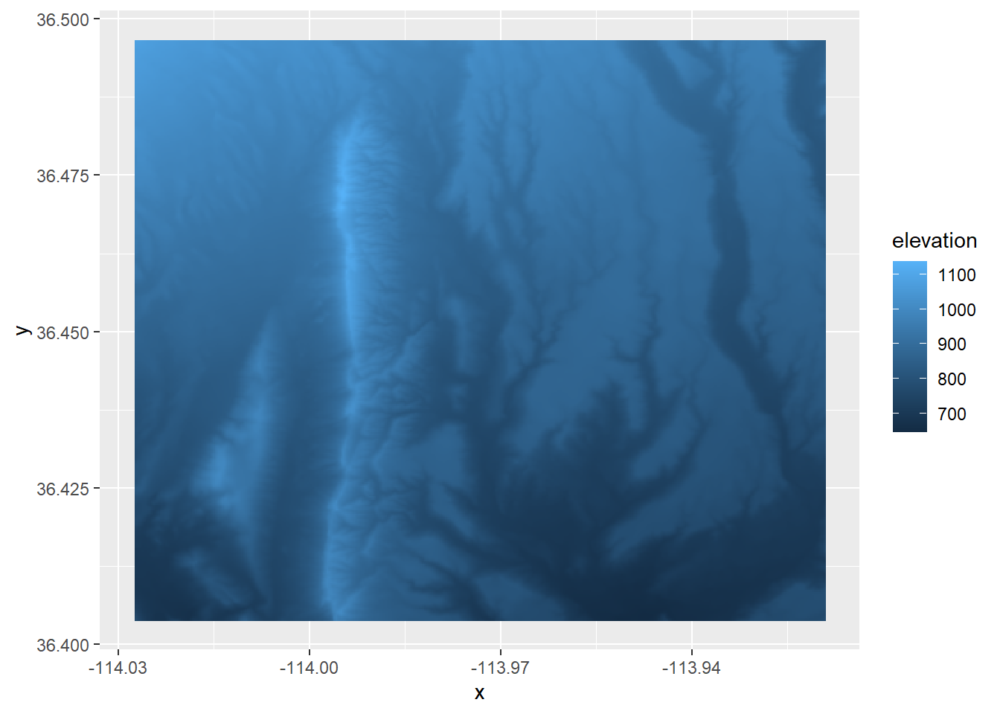
# You can use the pipe to run this process all at once
elev %>%
as.data.frame(xy = TRUE) %>%
ggplot() +
geom_raster(aes(x = x, y = y, fill = elevation)) # This requires that you know the column name of the raster valuesAn important thing to note is that, depending on the size of the raster, it might be too computationally expensive to convert a raster to a data frame and R may give you an error.
(Another reminder that we will not cover how to make these maps look nice, this is just a quick way to check that your raster looks the way that you think it should)
Loading a raster with more than one band
In the example above, the raster we loaded only had one band. Let’s try loading in a raster downloaded from SNODAS (Snow Data Assimilation System) which has 2 bands: SWE (snow water equivalent) and snow depth. (SNODAS offers daily rasters, and this example raster is from 02-23-2019).
snow <- raster("Data/Examples/snow_20190223.tif")
snow## class : RasterLayer
## band : 1 (of 2 bands)
## dimensions : 12, 13, 156 (nrow, ncol, ncell)
## resolution : 0.008333333, 0.008333333 (x, y)
## extent : -114.025, -113.9167, 36.4, 36.5 (xmin, xmax, ymin, ymax)
## crs : +proj=longlat +datum=WGS84 +no_defs
## source : snow_20190223.tif
## names : snow_20190223
## values : 0, 24 (min, max)Notice how it says band 1 (of 2). If there are two bands, why did it only load 1? If we look in the help file for ?raster, it says that this function creates a RasterLayer object, meaning only 1 band. We can also see that there’s an argument called band, meaning you can specify which band you want to load (and the default is the first band). We could load individual bands one-by-one, but that’s tedious and, depending how many bands a raster stack has, could be lines and lines of repetitive code.
Instead, we’ll use the function stack() or brick()
snow_stack <- stack("Data/Examples/snow_20190223.tif")
class(snow_stack)## [1] "RasterStack"
## attr(,"package")
## [1] "raster"snow_stack## class : RasterStack
## dimensions : 12, 13, 156, 2 (nrow, ncol, ncell, nlayers)
## resolution : 0.008333333, 0.008333333 (x, y)
## extent : -114.025, -113.9167, 36.4, 36.5 (xmin, xmax, ymin, ymax)
## crs : +proj=longlat +datum=WGS84 +no_defs
## names : snow_20190223.1, snow_20190223.2
## min values : 0, 0
## max values : 24, 150snow_brick <- brick("Data/Examples/snow_20190223.tif")
class(snow_brick)## [1] "RasterBrick"
## attr(,"package")
## [1] "raster"snow_brick## class : RasterBrick
## dimensions : 12, 13, 156, 2 (nrow, ncol, ncell, nlayers)
## resolution : 0.008333333, 0.008333333 (x, y)
## extent : -114.025, -113.9167, 36.4, 36.5 (xmin, xmax, ymin, ymax)
## crs : +proj=longlat +datum=WGS84 +no_defs
## source : snow_20190223.tif
## names : snow_20190223.1, snow_20190223.2
## min values : 0, 0
## max values : 24, 150When we call the stack and the brick, they look identical besides the class. So what are the differences between a stack and brick? When we look at ?brick, the help file tells us a few differences. Both a RasterStack and RasterBrick are multi-layer raster objects, but processing time is shorter with a RasterBrick. However. a RasterBrick is less flexible than a RasterStack because it can only be created from a single file, while a RasterStack could be fed a list of file names or raster objects and automatically stack them all together. For the purposes of this example, a stack and a brick are essentially identical.
Let’s plot the raster stack just to make sure it looks like what we might expect:
plot(snow_stack)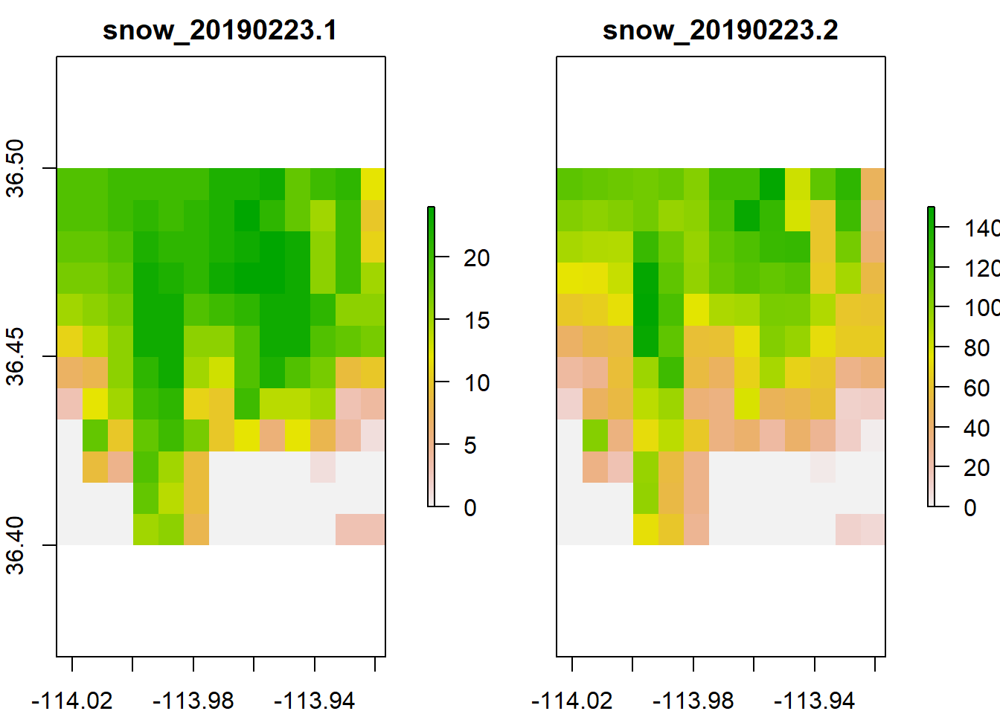
Note that plotting a raster stack (or brick) will plot all the layers at once.
The benefit of working with a stack of rasters is that if you need to perform a computation on all of your rasters, you can stack them all togther and the computation will run for every raster layer in the stack. However, rasters will only stack together if they have the same dimensions, resolution, extent, and crs.
For example, if we try to stack our elevation raster and stack of snow rasters together:
stack(elev, snow_stack)Error in compareRaster(x) : different extent
We get an error that the extents don’t match
extent(elev)## class : Extent
## xmin : -114.0275
## xmax : -113.9191
## ymin : 36.40381
## ymax : 36.49667extent(snow_stack)## class : Extent
## xmin : -114.025
## xmax : -113.9167
## ymin : 36.4
## ymax : 36.5They’re very close, but they need to be exact. Why can’t I just not stack them and run seperate computations on these rasters? You can, but your raster cells will be slightly off from each other and may result in inaccurate results and inference.
Figure 3.1: A stack of rasters, showing how each cell would correspond to the ones on top and below
In a future section, we’ll talk about how to make your rasters line up so you can stack them all together.
3.2.2 Create a raster
To create a raster from scratch, we’ll use the same function raster() but instead of the filename or band as arguments, we’ll include the extent and resolution that we want. In this example, let’s just make something random.
set.seed(1) # this is to make the randomness of runif the same every time
x <- runif(1, min = 0, max = 10)
y <- runif(1, min = 0, max = 10)
r_new <- raster(xmn = x, xmx = x + 10, ymn = y, ymx = y + 10, resolution = 1)
r_new## class : RasterLayer
## dimensions : 10, 10, 100 (nrow, ncol, ncell)
## resolution : 1, 1 (x, y)
## extent : 2.655087, 12.65509, 3.721239, 13.72124 (xmin, xmax, ymin, ymax)
## crs : +proj=longlat +datum=WGS84 +no_defsNote that because we didn’t specify the CRS in the arguments, it defaulted to WGS84 lat/long.
Right now this raster is empty. We can check with the function values()
head(values(r_new))## [1] NA NA NA NA NA NAWe’ll use the same function to assign fill the raster with values. If you noticed, there are 100 total cells that need to be filled, and let’s fill them with random numbers.
values(r_new) <- runif(100)
head(values(r_new))## [1] 0.5728534 0.9082078 0.2016819 0.8983897 0.9446753 0.6607978r_new## class : RasterLayer
## dimensions : 10, 10, 100 (nrow, ncol, ncell)
## resolution : 1, 1 (x, y)
## extent : 2.655087, 12.65509, 3.721239, 13.72124 (xmin, xmax, ymin, ymax)
## crs : +proj=longlat +datum=WGS84 +no_defs
## source : memory
## names : layer
## values : 0.01339033, 0.9919061 (min, max)plot(r_new)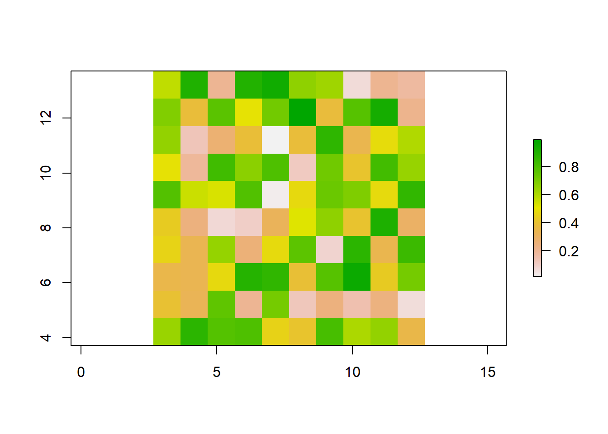
Why would you need to create a raster from scratch?
- If you’ve written code to perform a calculation or an analysis on a raster, it’s good to check that your code is doing what you think it’s doing. A good way to test the code is to try it out on a “dummy” raster
- If you’re asking for help on your code (on Stack Overflow for example), it’s good practice to either include your data (which is often very difficult to do) or to create a reproducible example. Knowing how to create fake data or fake rasters is useful to know.
- We’ll see in the next section another useful reason for creating a raster from scratch.
3.2.3 Project a raster
Let’s go back to the elevation raster we loaded earlier. If you noticed, the CRS of this raster is WGS84 UTM12N, as opposed to NAD83 UTM12N that we used earlier for our vector data.
proj4string(elev)## [1] "+proj=longlat +datum=WGS84 +no_defs"If we were going to do some sort of analysis on our vector data and raster data, we want all of our spatial objects to be in the same CRS so that we know that our layers are truly stacked on top of the other (for plotting and analysis). For that reason, we need to project this raster to NAD83 UTM12N. To do so, we’ll use the function projectRaster
elev_proj <- projectRaster(elev, crs = "+init=epsg:26912")
elev_proj## class : RasterLayer
## dimensions : 354, 415, 146910 (nrow, ncol, ncell)
## resolution : 24.9, 30.8 (x, y)
## extent : 228349.4, 238682.9, 4032553, 4043456 (xmin, xmax, ymin, ymax)
## crs : +proj=utm +zone=12 +datum=NAD83 +units=m +no_defs
## source : memory
## names : elevation
## values : 645.8186, 1136.32 (min, max)Wait, let’s take a look at the cell resolution again…
res(elev_proj)## [1] 24.9 30.8This elevation raster came from the USGS’s 3D Elevation Program. When I downloaded it, I specified a 1-arcsecond resolution (arcsecond is the unit for long/lat projections), which is equivalent to a 30mX30m resolution in a linear projection (like UTM). So why is the resolution after projecting not actually 30mX30m?
What’s happening is that every cell needs to be projected, causing the cells to be warped and results in slightly off cell measurements.
What if we tried specifying the cell resolution in the projectRaster function?
elev_proj_2 <- projectRaster(elev, crs = "+init=epsg:26912", res = 30)
elev_proj_2## class : RasterLayer
## dimensions : 363, 345, 125235 (nrow, ncol, ncell)
## resolution : 30, 30 (x, y)
## extent : 228348.8, 238698.8, 4032562, 4043452 (xmin, xmax, ymin, ymax)
## crs : +proj=utm +zone=12 +datum=NAD83 +units=m +no_defs
## source : memory
## names : elevation
## values : 645.8673, 1137.32 (min, max)We could do this. But can we be sure that all of the cells in this raster would align one-to-one in all of our other rasters? And if they don’t align, can we be sure our analysis and computation on all of our rasters would be correct?
snow_proj <- projectRaster(snow_stack, crs = "+init=epsg:26912", res = 30)
snow_proj## class : RasterBrick
## dimensions : 389, 345, 134205, 2 (nrow, ncol, ncell, nlayers)
## resolution : 30, 30 (x, y)
## extent : 228559.8, 238909.8, 4032145, 4043815 (xmin, xmax, ymin, ymax)
## crs : +proj=utm +zone=12 +datum=NAD83 +units=m +no_defs
## source : memory
## names : snow_20190223.1, snow_20190223.2
## min values : -8.835303, -49.926375
## max values : 23.99968, 157.71859stack(elev_proj_2, snow_proj)Error in compareRaster(x) : different extent
Furthermore, there’s something else happening when rasters are projected. Let’s double-check the help file, ?projectRaster. It looks like there’s another argument called method that defaults to "bilinear". If you scroll down to the details of method, it says it can either take ngb (or nearest neighbor) or bilinear (or bilinear interpolation). Ok…well what does that mean? Bilinear interpretation is basically a way of estimating a value in between two other values. Nearest neighbor essentially picks the exact value of a point that’s closest to the focal point.
This essentially means that when you use projectRaster, the raster cells are being warped and shifted slightly, so R can’t just simply move the entire raster over, but it needs to know how to estimate the cell values in their new location and new resolution. So should it estimate a value in between two cell values or pick the actual value of the cell it’s closest to? Either way, this will slighlty adjust the data:
elev_bilinear <- projectRaster(elev, crs = "+init=epsg:26912", res = 30, method = "bilinear")
elev_ngb <- projectRaster(elev, crs = "+init=epsg:26912", res = 30, method = "ngb")
# check the spread of values in the orginal raster
summary(values(elev))## Min. 1st Qu. Median Mean 3rd Qu. Max.
## 645.8 798.5 869.5 864.4 932.0 1137.7# check the spread of values in the raster estimated with bilinear
summary(values(elev_bilinear))## Min. 1st Qu. Median Mean 3rd Qu. Max. NA's
## 645.9 798.4 869.5 864.4 932.1 1137.3 13855# check the spread of values in the raster estimated with nearest neighbor
summary(values(elev_ngb))## Min. 1st Qu. Median Mean 3rd Qu. Max. NA's
## 646.0 798.5 869.5 864.4 932.0 1137.7 13855There’s no right or wrong answer on which method you pick. The projectRaster help file recommends using bilinear for continuous rasters (like this elevation raster we’re working with) and ngb for categorical rasters (in fact, you probably shouldn’t use bilinear for categorical rasters because it will pick a value that’s in between two values which aren’t real numbers, but are actually stand-ins for a category). In my work I use ngb for continous rasters as well, so I’m going to use that for these examples, but bilinear is valid to use as well. (Again, as with everything, it depends on your analysis and your system.)
One thing to keep in mind with projecting rasters is that you should not over-project and re-sample your rasters over and over again. Imagine printing a picture and then making a copy of that printed picture. And then making a copy of the copy. And then a copy of that that copy. Over and over again. Eventually you end up with a warped image that only vaguely resembles the original image. A similar thing can happen if you project and re-sample your rasters even more than once.
In contrast, there is no issue with projecting and re-projecting your vector data over and over again.
Ok, so now that we know the dangers of projecting rasters, what is the best way project a raster? I recommend (and projectRaster also recommends) creating a template raster and using that template as a mold for all of your rasters. (hint: this is where it comes in handy to know how to make a blank raster)
So let’s create a template raster with our desired CRS, cell resolution, and extent. To choose the cell resolution, I recommend picking your set of rasters with the smallest resolution (but keep in mind that this will affect disk space and computation time, so again there’s no right or wrong answer). In this case, elevation (30mX30m) has a smaller resolution than snow (1kmX1km). The extent should be the min and max area of focus, such as your study area.
# create a blank raster with desired parameters. We don't need to add any values to it
template <- raster(crs = "+init=epsg:26912", resolution = c(30, 30),
xmn = 228560, xmx = 238910, ymn = 4032145, ymx = 4043815)
template## class : RasterLayer
## dimensions : 389, 345, 134205 (nrow, ncol, ncell)
## resolution : 30, 30 (x, y)
## extent : 228560, 238910, 4032145, 4043815 (xmin, xmax, ymin, ymax)
## crs : +proj=utm +zone=12 +datum=NAD83 +units=m +no_defs# use the template to project our rasters
# from = focal raster
# to = the raster object with the desired parameters
# method = the method to compute new values
elev_proj_template <- projectRaster(from = elev, to = template, method = "ngb")
snow_proj_template <- projectRaster(from = snow_stack, to = template, method = "ngb")
elev_proj_template## class : RasterLayer
## dimensions : 389, 345, 134205 (nrow, ncol, ncell)
## resolution : 30, 30 (x, y)
## extent : 228560, 238910, 4032145, 4043815 (xmin, xmax, ymin, ymax)
## crs : +proj=utm +zone=12 +datum=NAD83 +units=m +no_defs
## source : memory
## names : elevation
## values : 645.9824, 1137.67 (min, max)snow_proj_template## class : RasterBrick
## dimensions : 389, 345, 134205, 2 (nrow, ncol, ncell, nlayers)
## resolution : 30, 30 (x, y)
## extent : 228560, 238910, 4032145, 4043815 (xmin, xmax, ymin, ymax)
## crs : +proj=utm +zone=12 +datum=NAD83 +units=m +no_defs
## source : memory
## names : snow_20190223.1, snow_20190223.2
## min values : 0, 0
## max values : 24, 150# now we can stack them! This way we know for sure that all cells align with every layer
stack <- stack(elev_proj_template, snow_proj_template)
stack## class : RasterStack
## dimensions : 389, 345, 134205, 3 (nrow, ncol, ncell, nlayers)
## resolution : 30, 30 (x, y)
## extent : 228560, 238910, 4032145, 4043815 (xmin, xmax, ymin, ymax)
## crs : +proj=utm +zone=12 +datum=NAD83 +units=m +no_defs
## names : elevation, snow_20190223.1, snow_20190223.2
## min values : 645.9824, 0.0000, 0.0000
## max values : 1137.67, 24.00, 150.00plot(stack)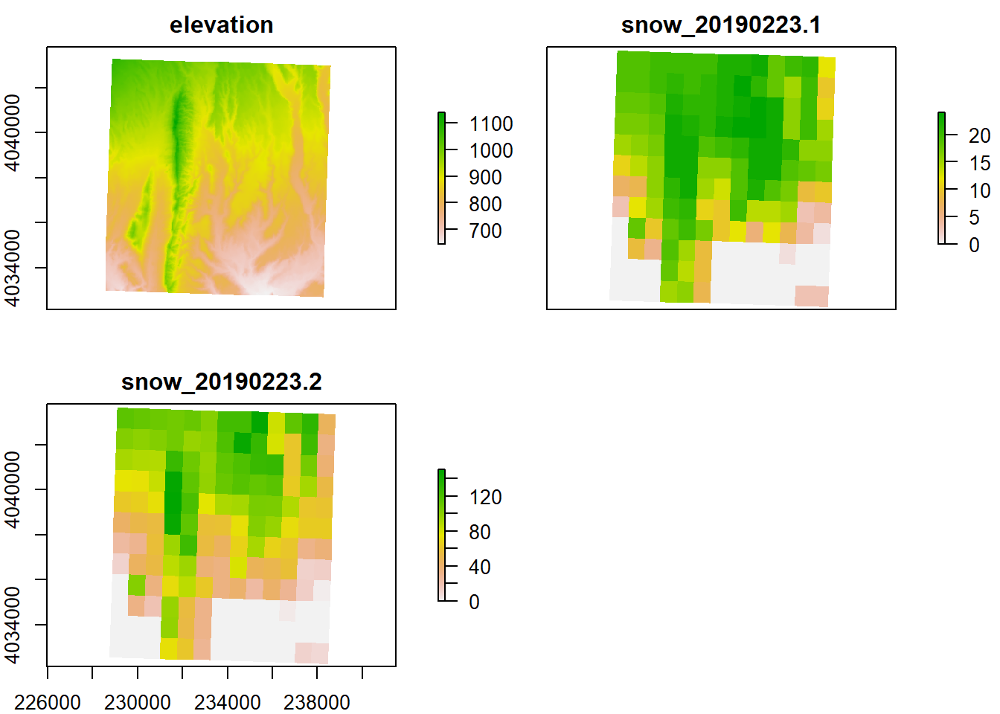
Right now the bands’ names (besides “elevation”) are not very descriptive, but we can change their names so that we can more easily remember which band is which. In this case, band 1 is elevation, band 2 is SWE, and band 3 is snow depth. To change the band names, we’ll use the function names()
names(stack) <- c("elevation", "swe", "snow_depth")
stack## class : RasterStack
## dimensions : 389, 345, 134205, 3 (nrow, ncol, ncell, nlayers)
## resolution : 30, 30 (x, y)
## extent : 228560, 238910, 4032145, 4043815 (xmin, xmax, ymin, ymax)
## crs : +proj=utm +zone=12 +datum=NAD83 +units=m +no_defs
## names : elevation, swe, snow_depth
## min values : 645.9824, 0.0000, 0.0000
## max values : 1137.67, 24.00, 150.003.2.4 Save a raster
To save a raster we’ll use the function writeRaster. We need to include the raster object that we’re saving, the full file name (including the directory but not the file extension), and the format (i.e. the file type) we want to save the raster as.
The two most common formats are raster (which creates two files with the extensions .gri and .grd) & GTiff (GeoTIFF, which creates a file with the extension .tif). I personally use GeoTIFF’s, but a pro for using raster is that it saves the name of the raster layers that are in a stack.
(You can also check writeFormats() for other formats to save a raster.)
writeRaster(stack, "Data/Examples/elev_snow_stack", format = "GTIFF")Note that some raster functions have optional arguments to add filenames and formats so that the funciton will automatically save the output after performing its function.